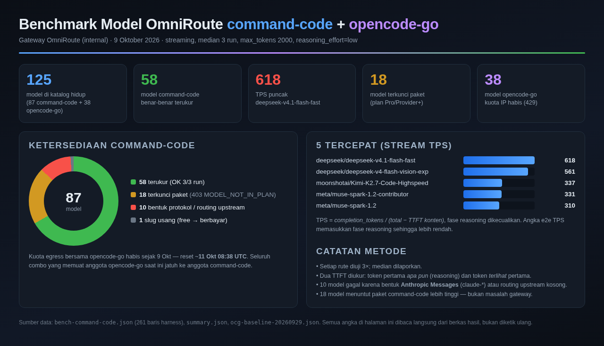
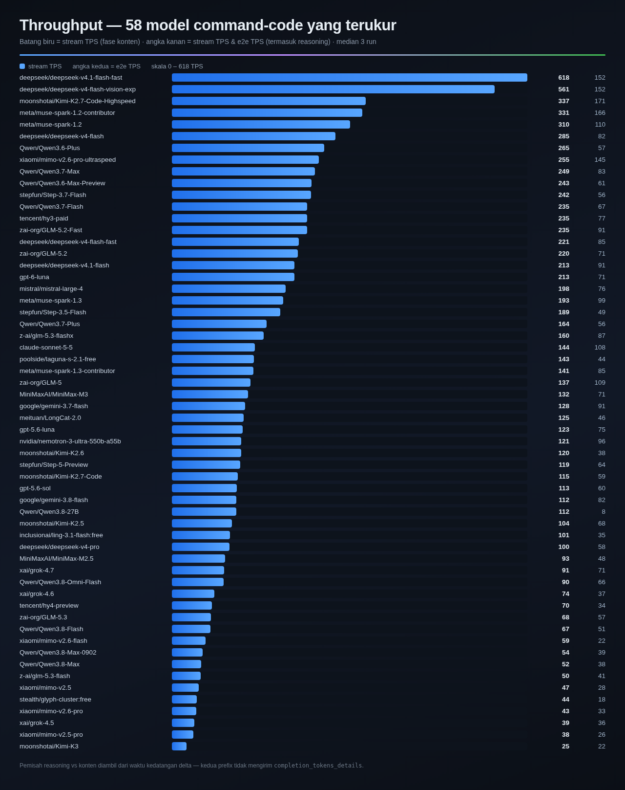
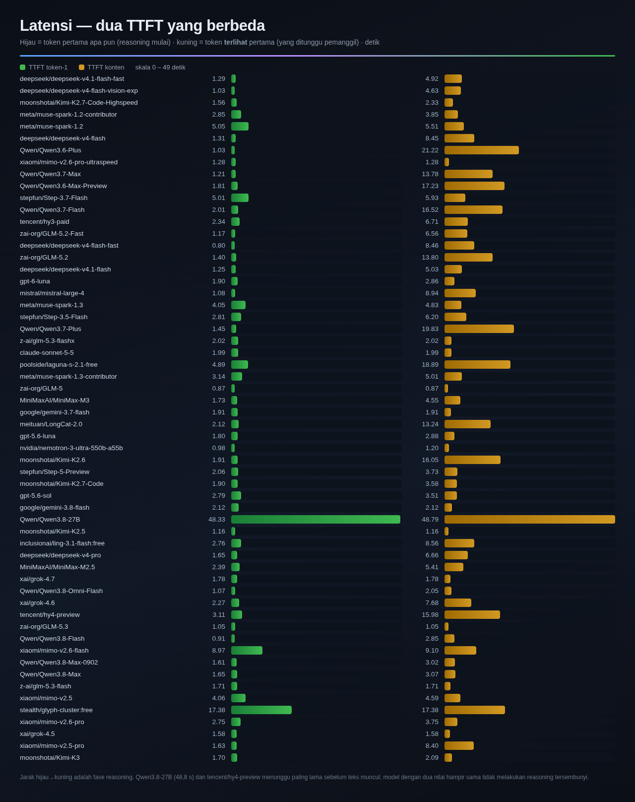
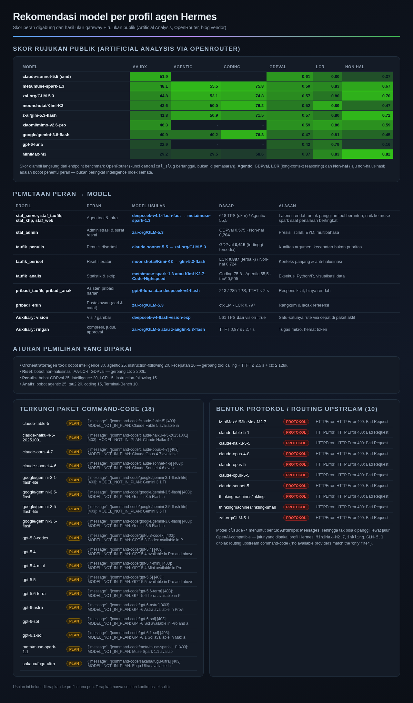

← Beranda / benchmarks
Benchmark Model LLM — command-code + opencode-go
Gateway OmniRoute · 9 Oktober 2026 · streaming, median 3 run,
max_tokens 2000, reasoning_effort=low
125
model di katalog hidup
87 command-code + 38 opencode-go
58
rute command-code
benar-benar terukur
618
TPS puncak
deepseek-v4.1-flash-fast
29
rute command-code
tidak bisa dipanggil
1. Ringkasan & ketersediaan
Sebaran status 87 rute command-code, lima rute tercepat, dan catatan metode.

2. Throughput
Stream TPS (fase konten) dan e2e TPS (termasuk reasoning) untuk 58 rute yang terukur.

3. Latensi — dua tahap TTFT
Token pertama apa pun (reasoning mulai) dibandingkan token terlihat pertama, yaitu yang ditunggu pemanggil.

4. Rekomendasi per peran
Skor rujukan publik (Artificial Analysis) dan pemetaan model ke profil agen.

Metode singkat
- Setiap rute diuji 3 kali; angka yang dilaporkan adalah median.
- Dua TTFT diukur terpisah: token pertama apa pun dan token terlihat pertama.
- TPS stream = token keluaran dibagi durasi fase konten; e2e TPS memasukkan fase reasoning.
- 29 rute tidak dapat dipanggil: 18 terkunci paket (403
MODEL_NOT_IN_PLAN),
10 karena bentuk protokol / routing upstream, 1 karena slug usang.
- Seluruh 38 rute opencode-go tidak dapat diukur pada tanggal tersebut karena kuota egress
penyedia habis (HTTP 429).